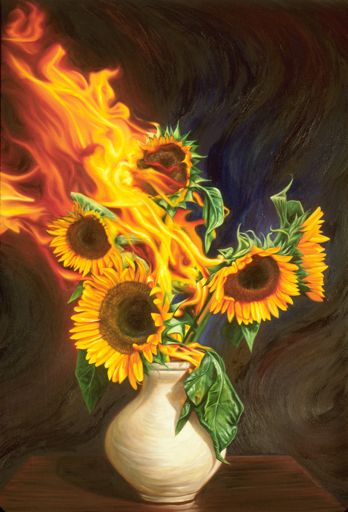

Literature
Ron English, Popaganda: The Art & Subversion of Ron English (San Francisco: Last Gasp, 2001), p. 102. ISBN 1-887128-60-3.

Ron English, Original Grin: The Art of Ron English (Paris: Cernunnos, 2019), p. 246. ISBN 978-2374950938.

Notes
In Original Grin, this work was erroneously reported as 36 × 48 inches. The present catalogue record leaves the dimensions as unknown; the published measurement does not match the work’s visible proportions. A 36 × 48 inch format implies a height-to-width ratio of 0.75, while the documented image of the painting is approximately 0.66.
Ancillary Documentation


Selected Online Circulation
Selected examples of the work’s online circulation, reproduction, or discussion. This list is not exhaustive; it is intended to document representative appearances of the image beyond formal exhibition and publication records.